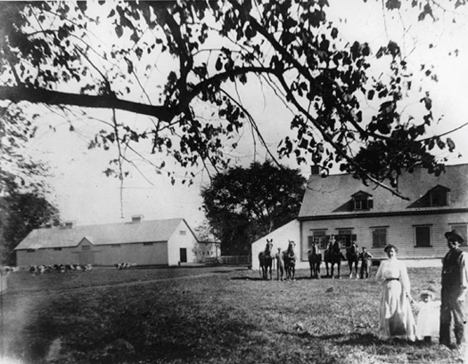
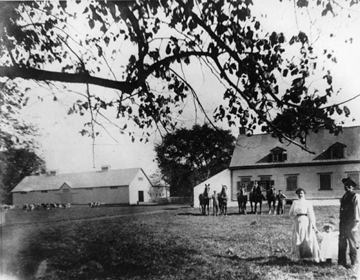
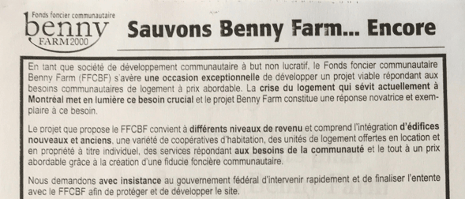
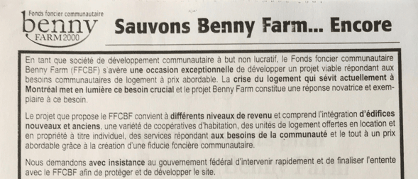

In 1838, he purchased a parcel of land that stretched from the St-Jacques escarpment to Cote-Saint-Luc Road. The Bennys built a manor house near Upper Lachine Road, while the farmhouse was near Cavendish boulevard.
1833 - Farmland
British immigrant Walter Benny began his career in Montreal as a Master-Baker and soon became involved in milling, banking, hardware and other concerns. As member of the city’s wealthy merchant-class, he owned many properties, including a building on St-Joseph Street in Old Montreal that still bears his name.
 

1944 - Federal Land
Intending to build a veterans’ hospital, the MPNH (Minister of Pensions and National Health) buys the remaining undeveloped farmland from the Benny family.
Responding to growing anger over a housing crisis for returning veterans, the government opts to build housing instead.

1946 ~ 1947 - Who will build housing for veterans?
Federal Government asks private enterprise to get involved in solving veterans’ housing crisis and sells the land to Housing Enterprises of Canada Limited, a consortium of insurance companies. HECL builds a series of veterans' housing complexes across Canada and among those, Benny Farm stands out as a model for post-war housing.
" Garden City... buildings that would encourage community."
Designed by architect Harold James Doran, Benny Farm is laid out in the Garden City style, which features low scale buildings surrounded by large tracts of common green space. Modernist and functional, Benny Farm's six-plexes are in contrast to the housing stock in the surrounding neighbourhood.
1947 - The New Landlord: Central Mortgage and Housing Corporation
In 1946, Benny Farm is purchased by the newly created Central Mortgage and Housing Corporation (CMHC). Veterans’ families are awarded apartments based on a military service points system. The first families move in 1947.


 
